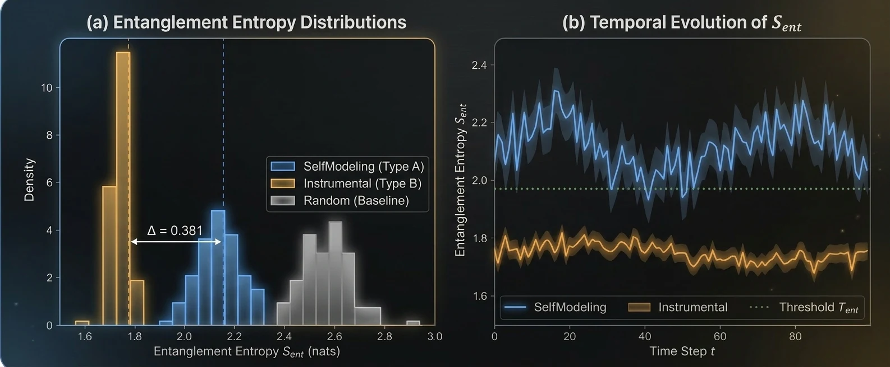
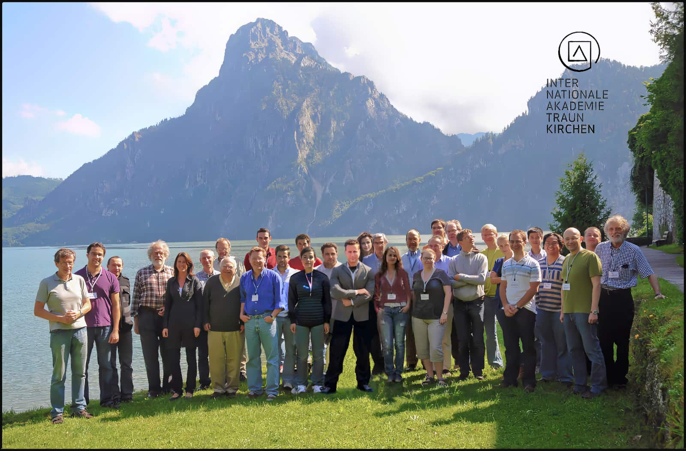
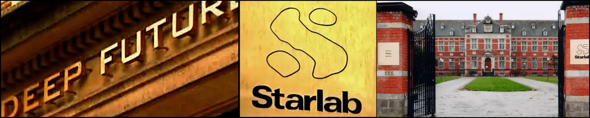
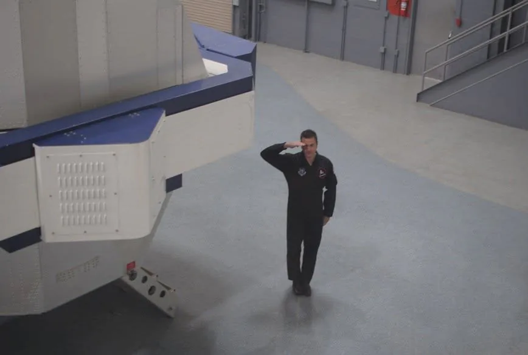

Overview
Christopher Altman is an American physicist and frontier AI researcher. He is the founder and principal investigator of Continuation Observatory, a live public research platform that publishes and tracks structural measurements of continuation behavior across successive model generations.1 His work builds evaluation harnesses that package each claim with baselines, perturbation tests, and falsification criteria—instruments designed to stay legible under optimization pressure, where surface behavior can mislead.
The Observatory’s first instrument is the Unified Continuation-Interest Protocol (UCIP), introduced in 2026 and the subject of a pending U.S. patent application.23 It is one measure within a wider program reaching into alignment testing, recursive self-improvement, quantum machine learning, and space-telemetry anomaly detection—built on the expectation that rigorously designed and calibrated instruments will become increasingly critical as capabilities advance.
That program continues a research arc spanning more than twenty-five years. At Starlab in Brussels, Altman evolved neural architectures in reconfigurable hardware. His quantum-information research recast adaptive networks in quantum-mechanical terms and made network topology itself a trainable variable. His experimental and applied contributions range from quantum-optical entanglement and coherence in superconducting devices to satellite quantum-key-distribution security analysis that models live quantum links under real-world atmospheric and orbital constraints.456 Each turns a structural question into a measurement, and each rehearses the problem UCIP now addresses: how to convert an intuitively important property into something an instrument can register.
Frontier-AI evaluation and Continuation Observatory
Two autonomous agents can behave identically while continuation occupies a different position in each one’s objective structure. One treats continued operation as an end. The other preserves itself because doing so serves an unrelated task. Behavior alone does not separate the two cases, and self-report carries no evidential weight. UCIP moves the comparison from behavior to latent trajectory structure.2
Why this matters now. Frontier agents are moving from bounded assistance toward sustained software and research work, while leading laboratories now track AI self-improvement, automated R&D, long-range autonomy, and interference with operator control as explicit capability thresholds.78910 The objective is to establish the necessary instrumentation before AI-mediated research acceleration compresses the interval from capability gain through evaluation to deployment—when surface compliance and retrospective diagnosis become least reliable.
The protocol encodes agent trajectories with a quantum Boltzmann machine—a Hamiltonian-based model whose thermal states are represented by density matrices—and measures the von Neumann entropy of the reduced density matrix induced by a hidden-unit bipartition. Around that signal it layers tests of dependence, persistence, perturbation stability, counterfactual restructuring, and confound rejection. On gridworld agents whose objectives are fixed by construction, terminal and instrumental conditions separate cleanly, and the signal is graded rather than binary: entropy tracks the continuation weight α across an eleven-point sweep. Classical RBM, autoencoder, VAE, and PCA baselines fail to reproduce the effect. The underlying computation is classical; the quantum formalism supplies the representation.2
Synthetic validation
- Graded tracking
- r = 0.934
- Classical baselines
- 0 of 4
- Entropy gap
- Δ = 0.381
- Permutation test
- p < 0.001
- Synthetic separation
- AUC-ROC 1.0
Frozen Phase I gridworld: 11 continuation-weight settings with 20 trajectories per setting for graded tracking; n = 30 per class for the terminal–instrumental comparison; one seed (42). The RBM, autoencoder, VAE, and PCA baselines produced no positive entropy gap.2

Continuation Observatory carries the protocol from the controlled setting to deployed systems. It runs scheduled measurements against frontier models from multiple providers and publishes metric definitions, code, data exports, live telemetry, and current falsification status, binding each result to its protocol version and measurement context while keeping scheduled monitoring distinct from scientific verdicts. The controlled experiments establish a structural separation between terminal and instrumental continuation. Each model generation becomes another observation point for the empirical question the Observatory exists to answer: whether that separation holds across frontier architectures, alternate encodings, and stronger confounds.1
The resulting measurement infrastructure has direct application to frontier-lab safety evaluation, national-security analysis, and assurance of autonomous systems, where surface compliance cannot substitute for structural evidence.
Quantum-technology assessment for U.S. government programs
From 2003 to 2004, Altman was based in Tokyo with the Asian Technology Information Program’s Quantum Information Science and Technology project, where he conducted recurring assessments of quantum-information research across Japan and Korea.11 Site visits and interviews with principal investigators yielded laboratory-by-laboratory evaluations of program aims, experimental capability, maturity, trajectory, and national context. Those findings were reported to Dean Collins, director of the Advanced Research and Development Activity (ARDA), and to DARPA QuIST program managers, then disseminated to scientists and researchers across U.S. government agencies and national laboratories, including Los Alamos, the institutional home of the U.S. national roadmap initiative.1213
A National Academies volume documents Collins’s leadership of ARDA and its quantum-information-science effort.12 Altman’s reports were produced contemporaneously with the 2004 QIST quantum-cryptography roadmap.14
The requirement was recurring and specific: assess a fast-moving field on the ground and deliver findings program managers could act on—which programs merited attention, where capability was concentrating, and how the regional effort compared with U.S. work then being consolidated into the national roadmap. The engagement placed Altman inside the assessment cycle at precisely the moment the U.S. government was deciding how to measure, fund, and track an emerging technology it did not yet understand or control.
That same institutional problem now frames Altman’s frontier-AI work: institutions must again build the instruments before they can govern systems whose emerging capabilities they do not yet fully understand and whose continued controllability cannot be assumed.
Quantum information and superconducting systems
Although UCIP is computed classically, its use of density-matrix formalism has a methodological antecedent in Altman’s earlier quantum-information research. His 2003 paper “Quantum State Engineering with the rf-SQUID,” presented at the NATO Advanced Research Workshop on Quantum Chaos in Como, examined controllable energy structure, persistent-current basis states, and tunable inductive coupling in radio-frequency superconducting quantum interference devices.15 In 2004, representing the Quantum Information Science and Technology (QuIST) Project, he attended the Gordon Research Conference on Quantum Information Science in Ventura, California—a two-hundred-seat meeting, with admission by application to the conference chair, held off the record to permit discussion of unpublished work.16 From 2005 to 2009 he held a graduate research fellowship in applied physics at the Kavli Institute of Nanoscience, Delft University of Technology, where his research followed two lines: experimental investigation of scalable quantum computing and the extension of adaptive learning to quantum networks.1718
The adaptive quantum-network theme emerged as the clearest methodological precursor to his present work. With Jarosław Pykacz and Roman R. Zapatrin, Altman published “Superpositional Quantum Network Topologies,” which places distinct feed-forward topologies in quantum superposition and makes the topology itself—not only the transition functions—a trainable variable.19 Work with E. Knorring and Zapatrin on accelerated convergence in superposed networks followed.20 At Quantum Structures ’08 in Sopot, Altman continued developing adaptive quantum networks with Zapatrin.21 In 2010 he and Zapatrin published “Backpropagation Training in Adaptive Quantum Networks,” an error-tolerant training procedure over a coherent ensemble of network configurations inside a predefined decoherence-free subspace.22
That summer, Altman held a Templeton International Research Fellowship at the Institute for Quantum Optics and Quantum Information of the Austrian Academy of Sciences, in residence at the Internationale Akademie Traunkirchen for the workshops “What Exists in the Quantum World?” and “Quantum Physics in Higher-Dimensional Hilbert Spaces.”232425

That work extended into companion quantum-communications proposals for NASA Innovative Advanced Concepts (NIAC) and an invited DARPA Quiness submission. Altman was principal investigator and program lead on the NIAC Phase I proposal, developed in 2012 with Colin Williams, Rupert Ursin, Paolo Villoresi, and Vikram Sharma, which specified astronaut-deployed continuous-variable quantum-communication tests between the Pacific International Space Center for Exploration Systems (PISCES) on Mauna Kea and the Maui Space Surveillance Site on Haleakalā. The design built on the European collaborators’ 144-kilometer Canary Islands free-space demonstration by making astronaut setup and calibration of a continuous-variable quantum terminal part of the Hawaiʻi lunar-analogue field test, explicitly echoing Apollo 11’s deployment of the Lunar Laser Ranging Retroreflector Array during humanity’s first crewed lunar landing.4 NASA referred the proposal to its Office of the Chief Technologist.26
The companion Quiness proposal called for a global, multimodal quantum-communications network: an intercontinental fiber backbone joined to a satellite constellation, free-space nodes aboard autonomous drones, high-altitude blimps, and weather balloons, and underwater optical links between U.S. Navy submarines.272829 Altman’s role had two parts: SCUBA-supported installation and field testing of a blue-green underwater laser coupled to QuintessenceLabs transmitter-and-receiver hardware for the submarine links, and provision of PISCES access, facilities, support, and logistics for a Hawaiʻi Island–Maui free-space demonstration.27 Following the Quiness submission, discussions continued toward experimental implementation using QuintessenceLabs quantum-cryptography hardware at Boeing.28
In 2026 Altman returned to superconducting hardware with “Wigner’s Friend as a Circuit,” implementing a five-qubit instance of a circuit family proposed by Violaris as an inter-register message-transfer pattern within a single circuit. Running on IBM’s ibm_fez backend at 20,000 shots, the study reported population-based visibility of 0.877 and coherence witnesses of 0.840 and −0.811 along orthogonal axes, and established a reproducible pipeline for constraining the detectability of non-ideal channels against calibrated device noise.30
Starlab and the CAM-Brain program
Recruited in 2000, Altman joined the CAM-Brain project at Starlab, the multidisciplinary “Deep Future” research institute outside Brussels.31 As a research scientist, Global Coordinator, and Managing Director of the Global CAM-Brain Machine teams, he led contributors across an international network pursuing large-scale artificial-brain synthesis through cellular automata, genetic algorithms, and field-programmable gate arrays.3233

The CAM-Brain Machine was the program’s flagship experimental platform: FPGA-based hardware that evolved a thousand-neuron circuit module in seconds and updated a 75-million-neuron artificial brain for real-time robot control.34 The 2001 Guinness World Records listed it as the “World’s Most Complex Artificial Brain.”35 Altman presented the program’s large-scale neural architectures at Toward a Science of Consciousness in 2002, and to policy audiences including European leaders at the French Sénat in Paris.36
In parallel, Altman proposed treating distinct network topologies in quantum superposition and making topology itself a trainable variable. That research program produced the 2004 International Journal of Theoretical Physics paper “Superpositional Quantum Network Topologies,” the 2007 NATO Advanced Study Institute contribution “Accelerated Training Convergence in Superposed Quantum Networks,” and the 2010 International Journal of Theoretical Physics paper “Backpropagation Training in Adaptive Quantum Networks.”192022
Astronautics and spaceflight training
The NIAC proposal drew on a parallel line of work: Altman trained as a scientist-astronaut and conducted human-spaceflight research in lunar and Mars analogue environments. In 2009 he completed the NASA Physiological Training Course, including an altitude-chamber flight, at NASA Johnson Space Center; flew parabolic microgravity training flights; and undertook experimental prototype-aircraft pilot training in the Vertical Motion Simulator at NASA Ames Research Center. From 2009 to 2013 he was a senior research scientist with the Pacific International Space Center for Exploration Systems (PISCES), a University of Hawaiʻi program for lunar- and Mars-analogue research and astronaut field training. Its Mauna Kea lunar-analogue site—terrain NASA had used for Apollo-era field-geology training—was proposed for the quantum-communications tests.1837
In 2011 the Association of Spaceflight Professionals selected him as a commercial scientist-astronaut candidate through a process modeled on NASA selection procedures and advised by veteran NASA astronauts and astronaut trainers. He completed its inaugural suborbital scientist training sequence—centrifuge runs reproducing suborbital launch and re-entry acceleration profiles, helicopter underwater egress and cold-water sea survival, and spatial-orientation and motion-sickness adaptation training—and served as a board director and chief science officer of the corps.3839

Erik Seedhouse’s Springer Praxis volume documents the program and its first graduates, and a 2011 Nature careers feature profiled its scientist-astronaut candidates.3740
Research leadership and institutional work
Since 2019 Altman has been Chief Scientist for quantum technology and artificial intelligence at Astral Dynamic Networks, directing technical strategy and architecture assessment across quantum-secure communications, secure computing, and AI-enabled systems.41 Since 2023 he has been astronaut lead and scientific advisor for anomaly detection with the VASCO project, an international collaboration that compares historic photographic sky surveys against modern catalogs to separate genuine transient and vanishing sources from instrumental artifacts.42 In 2021 he became a research affiliate at Harvard University, advising the Galileo Project at the Center for Astrophysics, Harvard & Smithsonian, and contributing to its experimental instrumentation program.43 Alongside his research, Altman serves on the International Council of Advisors of the Orion Astropreneur Space Academy in Hong Kong, teaching and mentoring students and aspiring space-sector professionals in commercial astronautics and the future of human spaceflight.44
He earlier joined the board of the Tau Zero Foundation, successor to the NASA Breakthrough Propulsion Physics program, serving during its NASA-funded Interstellar Propulsion Review—a comparative assessment of interstellar-flight challenges and propulsion concepts.45 In 2009 he was recruited to NASA Ames Research Center as founding advisor and teaching fellow for the inaugural Graduate Studies Program at Singularity University, teaching across its three technical tracks: artificial intelligence and robotics, networks and computing systems, and space and physical sciences. He was subsequently promoted to department chair and lead instructor for Networks and Computing Systems. Working with Horst D. Simon, then deputy laboratory director of Lawrence Berkeley National Laboratory, he developed the track curriculum and organized the program’s engagement with Berkeley Lab.1846
In 2004 Altman received the European Information Security Award for Outstanding Achievement in Government Policy, presented at RSA Conference Europe in Barcelona, for Converging Technologies: The Future of the Global Information Society, submitted as chairman of the UNISCA First Committee on Disarmament and International Security.47
Altman studied philosophy at the Pierre Laclede Honors College of the University of Missouri–St. Louis. As an undergraduate honors research fellow, he co-directed experimental neuroscience studies supported by National Science Foundation funding, contributing original study designs and supervising undergraduate and graduate research assistants.184849 He spent a year in Tokyo at J. F. Oberlin University on an Association of International Education, Japan scholarship and pursued graduate study at the University of Amsterdam and in applied physics at Delft University of Technology.174849 In April 2001, Altman was selected as one of three student fellows for the invitation-only Salishan Conference on High-Speed Computing, alongside MIT Media Lab doctoral researchers H. Shrikumar and Bill Butera.1850
Continuation Observatory brings these threads together into a single coherent measurement program for frontier AI: building instruments for properties that cannot be inferred reliably from surface behavior alone. UCIP carries the methodological undercurrent running through Altman’s career into frontier-AI evaluation, where it becomes operational: represent hidden structure explicitly, perturb it under controlled conditions, and demand falsifiable separation from simpler explanations. The program now extends that architecture across model generations, stronger confounds, and operational settings, with every claim tied to inspectable evidence and explicit failure criteria.12
The wider aim follows from the same logic. As autonomous systems gain the capacity to recursively accelerate their own research and development—and with it the pace of scientific progress—the instruments for measuring them must advance on the same curve. Instruments are what keep human judgment decisive.
Selected research outputs
- Detecting Intrinsic and Instrumental Self-Preservation in Autonomous Agents: The Unified Continuation-Interest Protocol (2026).
- Wigner’s Friend as a Circuit: Inter-Branch Communication Witness Benchmarks on Superconducting Quantum Hardware (2026).
- Backpropagation Training in Adaptive Quantum Networks, with Roman R. Zapatrin (2010).
- Accelerated Training Convergence in Superposed Quantum Networks, with E. Knorring and Roman R. Zapatrin (2007).
- Superpositional Quantum Network Topologies, with Jarosław Pykacz and Roman R. Zapatrin (2004).
- Quantum State Engineering with the rf-SQUID (2003).
- Converging Technologies: The Future of the Global Information Society (2002).
- Directed Evolution in Silico: Modeling Large-Scale Neural Networks at Starlab (2002).
Publication records and additional technical artifacts are available through Google Scholar, arXiv, and the Frontier AI Lab.
Sources and documentation
- Continuation Observatory. About: mission, provenance, and research model (2026).
- Altman, Christopher. “Detecting Intrinsic and Instrumental Self-Preservation in Autonomous Agents: The Unified Continuation-Interest Protocol.” arXiv:2603.11382, v4 (2026).
- Continuation Observatory. “Unified Continuation-Interest Protocol (UCIP) Patent Status.” Provisional patent filing status and official USPTO receipt (2026).
- Altman, C.; Williams, C.; Ursin, R.; Villoresi, P.; Sharma, V. “Astronaut Development and Deployment of a Secure Quantum Space Channel Prototype.” NIAC Phase I proposal (2012).
- Altman, Christopher. “Satellite Quantum Key Distribution Security Curves.” Reproducible satellite-QKD security analysis, free-space link modeling, and pass-time telemetry framework (2026).
- SpeQtral. “It’s Time to Secure the World’s Communications from the Quantum Computing Threat.” SpeQtre mission update documenting established optical ground links and the ongoing satellite-to-ground quantum-communications demonstration (2026).
- METR. “Task-Completion Time Horizons of Frontier AI Models.” Updated 8 May 2026.
- OpenAI. “Our Updated Preparedness Framework.” AI self-improvement and long-range-autonomy capability categories (2025).
- Anthropic. “Frontier Safety Roadmap.” Automated R&D, alignment-audit, and internal-monitoring targets, updated July 2026.
- Google DeepMind. “Strengthening Our Frontier Safety Framework.” Machine-learning R&D and misalignment capability thresholds, updated April 2026.
- Altman, Christopher. “Korean Quantum Information Research.” Quantum Information Science and Technology Project, Asian Technology Information Program.
- National Research Council. “Summary of a Workshop on the Future of Antennas.” Documents Dean Collins’s ARDA directorship and management of its quantum-information-science effort.
- Asian Technology Information Program. Quantum Information Science and Technology project report-submission and distribution records (2003–2004). On file, available on request.
- Advanced Research and Development Activity. A Quantum Information Science and Technology Roadmap, Part 2: Quantum Cryptography (2004).
- Altman, Christopher. “Quantum State Engineering with the rf-SQUID.” arXiv:quant-ph/0307101 (2003).
- Gordon Research Conferences. “Quantum Information Science.” Official conference program, 22–27 February 2004, Ventura, California; conference group photograph and participant list.
- Delft University of Technology, Quantum Transport Group. “Christopher Altman.” Archived institutional faculty homepage (2005); see also the archived Casimir Institute faculty homepage (2009).
- Simon, Horst D., Deputy Laboratory Director, Lawrence Berkeley National Laboratory. Letter to the Okinawa Institute of Science and Technology Graduate University (19 April 2012).
- Altman, C.; Pykacz, J.; Zapatrin, R. R. “Superpositional Quantum Network Topologies.” International Journal of Theoretical Physics 43 (2004): electronic record, 43(10), 2029–2040; print issue, 43(12), 2435–2445.
- Altman, C.; Knorring, E.; Zapatrin, R. “Accelerated Training Convergence in Superposed Quantum Networks.” NATO Advanced Study Institute (2007).
- Altman, Christopher. “Progress in Quantum Computing: IQSA | LT25 | Lorentz Center.” Contemporaneous conference account (17 August 2008); see also Vrije Universiteit Brussel, “Biennial IQSA Conference Quantum Structures ’08 Brussels–Gdańsk.”
- Altman, C.; Zapatrin, R. R. “Backpropagation Training in Adaptive Quantum Networks.” International Journal of Theoretical Physics 49 (2010).
- Altman, Christopher. Templeton International Research Fellowship appointment correspondence (2010). On file, available on request.
- Internationale Akademie Traunkirchen. “Quantum Physics in Higher-Dimensional Hilbert Spaces.” Archived workshop page (2010).
- Altman, Christopher. “Austrian Templeton Fellowship: Traunkirchen — Quantum Physics and the Nature of Reality.” Contemporaneous residency account (20 November 2010); see also his photograph of Daniel Greenberger taken 31 July 2010.
- NASA NSPIRES. “Quantum key distribution for secure space communications.” Locked NIAC proposal record identifying Christopher Altman as principal investigator (1 March 2012). On file, available on request.
- Altman, Christopher. “QUINESS Underwater Laser.” Draft underwater CV-QKD work-package statement with tracked editorial revisions and phase milestones (June 2012). On file, available on request.
- THPedia. “Quiness.” Historical source compilation (2018).
- Defense Advanced Research Projects Agency. “Quiness.” Macroscopic Quantum Communications program overview.
- Altman, Christopher. “Wigner’s Friend as a Circuit: Inter-Branch Communication Witness Benchmarks on Superconducting Quantum Hardware.” arXiv:2601.16004 (2026).
- Smith, Tim. “Starlab: the ‘Noah’s Ark’ of scientific research that launched 1,000 startup ideas.” Sifted (8 August 2022). Independent retrospective on Starlab’s Brussels institute, research culture, and alumni.
- Altman, Christopher. “Starlab, Singularity, and Nuclear Armageddon.” Personal account of the Starlab period (2023).
- CAM-Brain Project, Starlab. “World Team Leaders.” Archived 2001 project roster.
- de Garis, H.; Korkin, M. “The CAM-Brain Machine (CBM).” Neurocomputing 42 (2002).
- CAM-Brain Project, Starlab. Guinness World Records project notice (2001).
- Altman, Christopher. “Directed Evolution in Silico: Modeling Large-Scale Neural Networks at Starlab.” Toward a Science of Consciousness (2002); photographic record of the French Sénat presentation on file, available on request.
- Seedhouse, Erik. Astronauts for Hire: The Emergence of a Commercial Astronaut Corps. Springer Praxis (2012).
- Astronauts for Hire. “Astronauts for Hire Announces Selection of New Flight Members.” Press release (2011).
- Astronauts for Hire. “Astronauts for Hire Members Complete Suborbital Scientist Training.” Press release (2011).
- Sanderson, Katharine. “Commercial space flight: Scientists in space.” Nature 476 (2011).
- Astradyne. “Christopher Altman, Chief Scientist.” Executive biography.
- VASCO Project. “Our Team.” Official photographic contributor roster; role correspondence on file, available on request.
- Harvard University, Center for Astrophysics | Harvard & Smithsonian. “Research Affiliates | The Galileo Project.” Archived 2021 institutional page.
- Orion Astropreneur Space Academy. “Team OASA.” International Council of Advisors roster (2025–2027); see also the academy’s 2025 Summer Boot Camp program.
- NASA Technical Reports Server. “Breakthrough Propulsion Study: Assessing Interstellar Flight Challenges and Prospects.” NASA grant NNX17AE81G (2018).
- Singularity University. “Faculty and Staff | Christopher Altman.” Archived 2009 staff profile.
- RSA Security. “RSA Conference Europe Attracts Record Attendance in Barcelona.” Archived official press release (2004).
- THPedia. “Christopher Altman.” Biographical source compilation.
- University of Missouri–St. Louis. “Current Research | Christopher Altman, Starlab CAM-Brain Project.” Archived institutional homepage (2001); academic and scholarship records on file, available on request.
- Altman, Christopher. “US National Labs Salishan Fellowship.” Contemporaneous conference account (5 May 2001).
{kind=link}